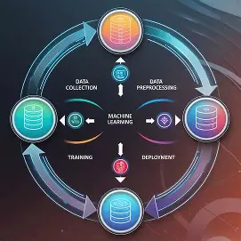

Asynchronous Requests and Web Services
Asynchronous requests allow a web page to communicate with a server without reloading the entire page. This means users can continue interacting with the website while data is being loaded in the background.
Why it is important
Asynchronous communication improves performance, responsiveness, and overall user experience by preventing "page freezing" during data fetch operations.
Practical Example
// Using the Modern Fetch API
fetch('https://api.example.com/data')
.then(response => response.json())
.then(data => console.log(data))
.catch(error => console.error('Error:', error));
Quick Check
Question: Why does the browser not "freeze" while a Fetch API request is waiting for a server response?
Click to reveal the answer
Because Fetch is asynchronous. It sends the request to the Web API environment and continues executing the rest of the code. Once the data returns, a callback function handles the result without ever blocking the main UI thread.